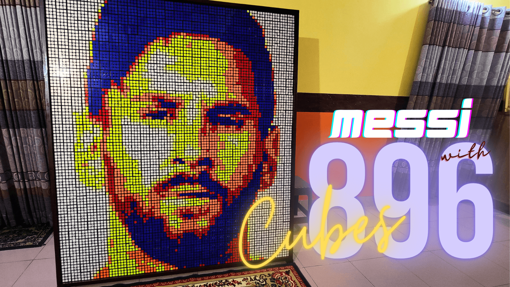

Rubik's Cube Art
Rubik's Cube Mosaic Art is a fascinating and innovative form of artistic expression that blends the iconic Rubik's Cube puzzle with the world of visual art. This unique art form involves arranging individual Rubik's Cubes in a meticulous pattern to create intricate and detailed images, designs, and even portraits.
Artists who specialize in Rubik's Cube Mosaic Art meticulously select Rubik's Cubes of various colors to act as pixels in their artwork. Each cube's colored face serves as a pixel, and by arranging these cubes in a specific order, a larger image emerges. This process requires an incredible attention to detail and a keen eye for color, as the artist must choose the right shades to achieve the desired visual effect.
Creating a Rubik's Cube mosaic is a labor-intensive endeavor that demands patience, precision, and creativity. The artist must first envision the image they wish to create and then plan out the color placement for each individual cube. Assembling the mosaic involves solving the Rubik's Cubes according to the predetermined pattern, ensuring that the correct colors are aligned to form the overall image.
In conclusion, Rubik's Cube Mosaic Art stands as a testament to human ingenuity and creativity. It transforms a classic puzzle into a medium for artistic expression, inviting viewers to appreciate the fusion of meticulous planning, dedication, and a deep appreciation for color and form. This art form continues to evolve, pushing the boundaries of what is possible with Rubik's Cubes and inspiring both artists and enthusiasts alike.
Artworks
